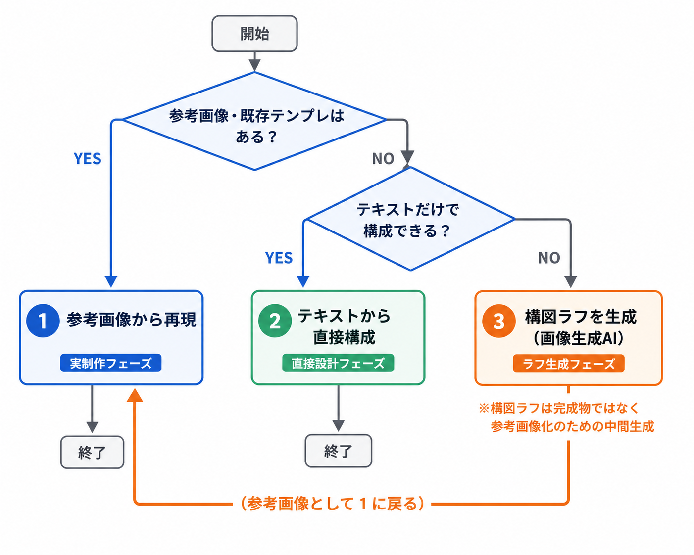

共通の前提
- Claude Code または Codex が利用できる状態にしておく
- 当フォルダを作業ディレクトリとして開く
- Claude Code で使う場合は、必要に応じて
/skillsでスキル認識を確認する（このフォルダの.claude/skills/配下にconsulting-slide-remakeとslide-design-patternsが入っており、開くだけで自動ロードされる） - Mode A / Mode B に流す参考スライド画像は
assets/references/に置く運用
フォルダの役割
- 中間ソース:
tmp-source/（HTMLスライド本体。手 or Claude で編集する場所） - 入力:
assets/references/（Mode A / Mode B に流す参考画像の置き場） - 共通スタイル:
assets/style.css（HTMLスライドの配色・タイポ） - 最終出力:
outputs/（スクリプトが生成。クライアントに渡すのはここ。手では触らない） - スキル本体:
.claude/skills/（Claude Code が自動参照） - 実行ツール:
scripts/（HTML 編集後の再ビルド時のみ実行） - ドキュメント:
docs/（仕組み解説・手順書・本書の解説図）
判断フロー

01
参考画像・既存テンプレから再現
起点: PPTX / HTML / 参考スライド画像
02
テキスト指示から構成案を作る
起点: テキスト指示 / 構成メモ
03
画像生成AIで構図ラフを作る
起点: 文章化した図解要件
1. 参考画像・既存テンプレから再現する
いつ使うか: すでに近い見た目のPPTX、HTMLスライド、参考スライド画像がある場合。構図・余白・配色・図解要素を踏襲し、中身を差し替える。
入力データ
- 参考画像（PNG / JPG）または既存PPTX
- 過去に作ったHTMLスライド
- 差し替えたい本文・章番号・メッセージ・表データ
操作手順
- 参考素材を
assets/references/フォルダに保存する。形式ごとの扱いは下表のとおり - このディレクトリを Claude Code で開く
- 下のプロンプト例のように、画像のパスと差し替えたいテーマ・テイストを伝える
- あとは Claude にお任せ。スキルが自動で構造解析・HTML化・PPTX生成まで実行する
- 完成した
outputs/*.pptxをダブルクリックで確認
参考素材ごとの置き方
| 形式 | 置き方 | 例 |
|---|---|---|
| 画像（PNG / JPG） | そのまま assets/references/ に保存 |
assets/references/mckinsey-sample.png |
対象ページをPNG/JPGに書き出してから assets/references/ に保存（プレビュー.appの「書き出し」、Adobe Acrobatのページ画像エクスポート等） |
assets/references/whitepaper-p12.png |
|
| 既存PPTX | PPTXファイル本体と、対象ページをPNG化したものを両方 assets/references/ に保存。Claudeに渡すのはPNG画像で、PPTXは元データの確認用 |
assets/references/client-deck.pptxassets/references/client-deck-p12.png |
| 過去に作ったHTMLスライド | このリポジトリ内の tmp-source/*.html をそのまま参照（コピー不要） |
tmp-source/05-matrix-2x2.html |
スキル（consulting-slide-remake）は画像から構造を読み取る仕組みのため、PDFやPPTXの場合は対象ページを 画像化してから渡す 必要があります。PowerPointの「名前を付けて保存 → PNG」やKeynoteの書き出し機能で1ページ単位の画像にできます。
アウトプット先
- 画像埋込PPTX:
outputs/consulting-html-slides.pptx - 編集可能PPTX:
outputs/*-editable.pptx
プロンプト例（参考画像から再現）
@assets/references/mckinsey-sample.png を政府系シンクタンク風で再現したい。
テーマは「AI 提案書作成ワークフローの現状」で、私の組織の
営業プロセスに置き換えてください。
PPTXまで作成してください。プロンプト例（既存PPTXのページを流用）
@assets/references/client-deck-p12.png の構図をベースに、
文言を「AI活用ロードマップ」に差し替えてください。
配色、章番号、KEY TAKEAWAY、右側の説明欄の型は維持し、
編集可能PPTXまで作成してください。画像のパスは @ をつけるとClaude Codeがファイル参照として認識します。複数枚渡したい場合は @assets/references/a.png @assets/references/b.png のように並べてください。
向いている場面
- トンマナや余白設計を既存資料に寄せたい
- 章番号、フッタ、KEY TAKEAWAYなどの型を維持したい
- 構図はそのまま使い、テキスト・数値・ラベルだけ差し替えたい
- ボックス数の増減や配置の微調整だけで済む
2. テキスト指示から構成案を作る
いつ使うか: 参考にできる見た目がなく、テーマ・論点・構成メモだけがある場合。まずスライドの骨格を作り、シンプルな図解ならそのままHTML化する。
入力データ
- 作りたいテーマ
- 伝えたい結論、章番号、想定読者
- 使いたいフレーム（比較表、ロードマップ、KPIツリー、業務フローなど）
操作手順
- このディレクトリを Claude Code で開く
- 下のプロンプト例のように、テーマ・結論・使いたいフレームを伝える
- あとは Claude にお任せ。スキルがレイアウト候補の提示 → アクションタイトル決定 → HTML化 → PPTX生成まで実行する
- 完成した
outputs/*.pptxをダブルクリックで確認
複雑な業務フロー・概念図にしたい場合は、先に「3. 画像生成AIで構図ラフを作る」を経由したほうが品質が安定します。
アウトプット先
- 画像埋込PPTX:
outputs/consulting-html-slides.pptx - 編集可能PPTX:
outputs/*-editable.pptx
プロンプト例
「AI活用ロードマップ」を1枚のスライドで説明したい。
構成は、現状課題 → 重点施策 → 導入ステップ → 効果指標。
政府系シンクタンク風のネイビー＋ブロンズで、PPTXまで作成してください。向いている場面
- まだ見た目の正解が決まっていない
- まず論理構成や見せ方を探索したい
- 比較表、ロードマップ、2x2、単純なプロセス図などで足りる
- 複数案を出してから1案に絞りたい
3. 画像生成AIで構図ラフを作る
いつ使うか: 参考画像がないが、複雑な業務フロー・概念図・構造図が必要な場合。画像生成AIで作るのは完成物ではなく、1番の再現ルートへ渡すための構図ラフ。
なぜ構図ラフを挟むのか
テキストだけで密な業務フローを一発生成すると、接続関係や情報密度が崩れやすい。画像生成AIで先に構図の当たりを作り、その画像を参考画像として consulting-slide-remake に渡すと、1番の「参考画像から再現」ルートに持ち込める。
入力データ
- 図解したい業務・概念・システム構成の説明文
- 登場要素（担当者、DB、帳票、CSV、処理ステップなど）
- 希望するテイスト（政府系シンクタンク風、アビーム風、ネイビー＋ブロンズなど）
操作手順
- 図解したい対象を文章で整理する（登場要素、矢印の方向、配色イメージなど）
- 画像生成AI（Nano Banana / GPT-Image / Claude Design など）に、文字少なめ・図形中心で構図ラフを1枚作らせる
- 生成された画像を
assets/references/フォルダに保存する - このディレクトリを Claude Code で開く
- 「1. 参考画像から再現する」と同じ要領で、画像パスと正しい本文・ラベル・数値を伝える
- あとは Claude にお任せ。完成した
outputs/*.pptxを確認
画像生成AIの出力にあるタイポや意味の通らない日本語は無視してOK。Claudeが構造を抽出する際に、こちらが指定した正しい文言で上書きされます。
アウトプット先
- 構図ラフ:
assets/references/配下 - 編集可能PPTX:
outputs/*-editable.pptx
画像生成AIに投げるプロンプト例
AI提案書作成ワークフローを、2レーンの業務フロー図として可視化してください。
左から右に処理が進み、DB、CSV、帳票、営業担当への引き渡しが分かる構図。
文字は最小限で、ネイビー、ブロンズ、ライトグレーを基調にしてください。注意
- 画像内の日本語や細かい数字は採用せず、後段で正しい文言に置き換える
- 生成画像は完成物ではなく、参考画像を人工的に作るためのたたき台として扱う
- DBアイコン、書類、矢印、番号バッジは最終的にHTML/SVGまたはPowerPoint図形で再構築する
PPTX出力の考え方
| 出力方式 | 特徴 | 必要なもの | 使いどころ |
|---|---|---|---|
| HTML → PNG → PPTX | HTMLをブラウザ表示どおりPNG化し、PPTXに全面貼付する。PowerPoint上では画像扱い。 | Playwright + Chrome。ローカルHTMLを正確にレンダリングするためで、スクレイピング用途ではない。 | 見た目の再現性を優先したい場合。 |
| HTML設計値 → 編集可能PPTX | python-pptxでテキスト・図形をPowerPoint要素として再構築する。細部は近似になる。 |
python-pptx。この方式ではPlaywrightは使わない。 |
後から文言・色・位置を直したい場合。 |
再生成コマンド
# プロジェクトルートで実行
/usr/local/bin/python3 scripts/01_build_pptx_image_embed.py
# → outputs/consulting-html-slides.pptx を更新
/usr/local/bin/python3 scripts/02_build_pptx_editable.py
# → outputs/12-ai-workflow-asis-editable.pptx を更新02_build_pptx_editable.py は現状 slide 12 専用。別スライドを編集可能PPTX化する場合は、対象スライドごとに座標・図形・テキストを再構築する。
トラブルシューティング（一例）
| 症状 | 原因 | 対処 |
|---|---|---|
playwright._impl._errors.Error: Executable doesn't exist |
画像埋込PPTX生成時に、Playwright が利用できるブラウザを見つけられない | 01_build_pptx_image_embed.py を使う場合のみ対応する。スクリプト内の executable_path="/Applications/Google Chrome.app/..." を参照、または playwright install chromium |
| 矢印が左上に飛んでいる | add_connector の引数を delta で渡している |
(begin_x, begin_y, end_x, end_y) の 絶対座標 で渡す |
| HTML スライドの iframe ギャラリーで点線位置がズレる | iframe スケーリングと CSS 計算式の相性 | フルスクリーン（tmp-source/*.html を直接開く）で確認すれば正常 |
| 編集可能 PPTX で書類アイコンの形が違う | MSO_SHAPE.FOLDED_CORNER で近似している |
MSO_SHAPE.FREEFORM で自前パス描画に差し替え可能 |